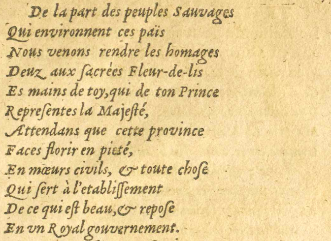
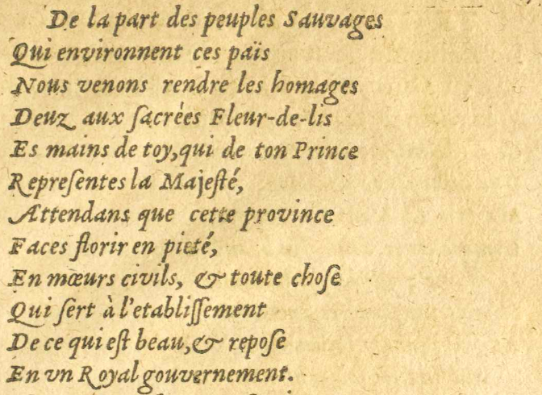
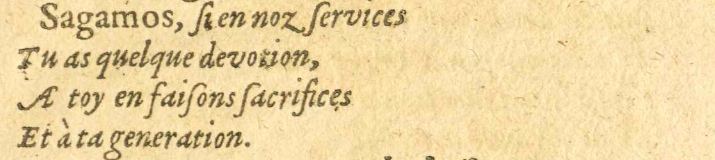
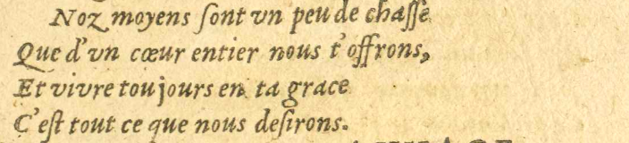
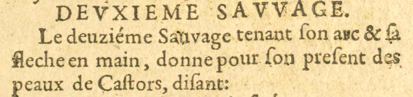
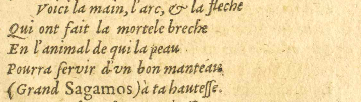
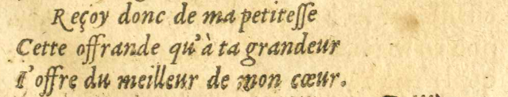

7/11
- De la part des peuples Sauvages
 Désignation de ceux habitant dans la nature, c'est-à-dire loin de la civilisation.
Désignation de ceux habitant dans la nature, c'est-à-dire loin de la civilisation. - Qui environnent ces païs
- Nous venons rendre les homages
- Deuz aux ſsacrées Fleur-de-lis
- Es#4 mains de toy, qui de ton Prince
- Repreſsentes la Majesté,
- Attendans que cette province
- Faces florir en pieté,
- En moeurs civils, & toute choſse
- Qui ſsert à l'etabliſsſsement
- De ce qui eſst beau, & repoſse
- En vnun Royal gouvernement.
 
- Sagamos, ſsi en nosE09 : noz ſservices
- Tu as quelque devotion,
- A toy en faiſsons ſsacrifices
- Et à ta generation.
- Noz moyens ſsont vnun peu de chaſsſse
- Que d'vnun coeur entier nous t'offrons,
- Et vivre toujours en ta grace
- C'eſst tout ce que nous deſsirons.
DEVXIEMEDEUXIEME SAVVAGESAUVAGE.

Le deuzieſsmeE09 E12 : deuziéme SauvageDésignation de ceux habitant dans la nature, c'est-à-dire loin de la civilisation. tenant ſson arc & ſsa
fleche en main, donne pour ſson preſsent des
peaux de Caſstors, diſsant :
- Voici la main, l'arc, & la fleche
- Qui ont fait la mortele breche
- En l'animal de qui la peau
- Pourra ſservir d'vnun bon manteau
- (Grand Sagamos) à ta hautesse.
- Reçoy donc de ma petiteſsſse
- Cette offrande qu'à ta grandeur
- IJ'offre du meilleur de mon coeur.
